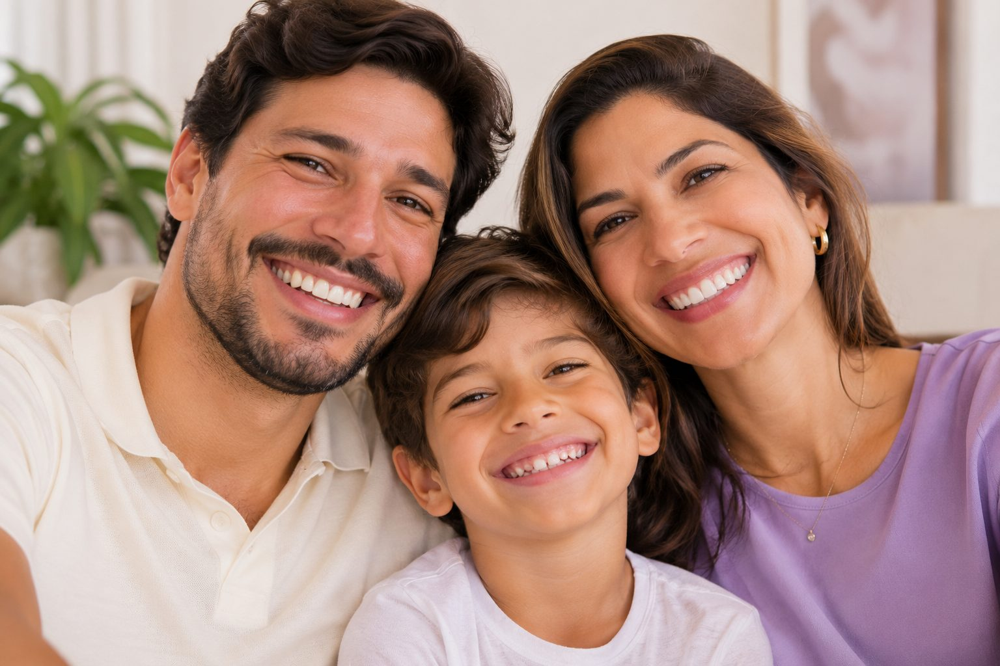
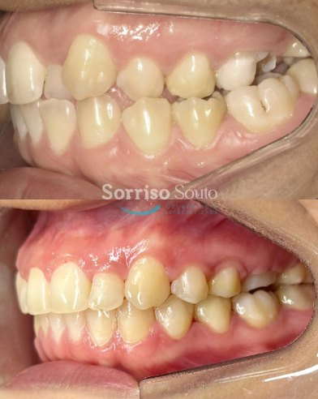
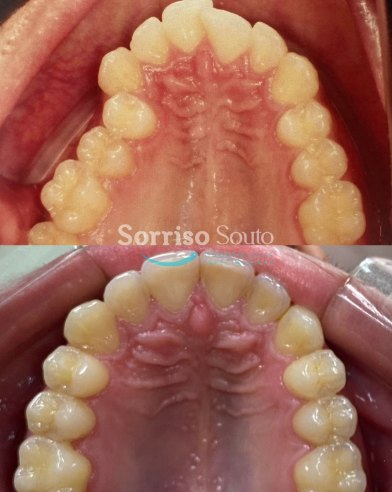
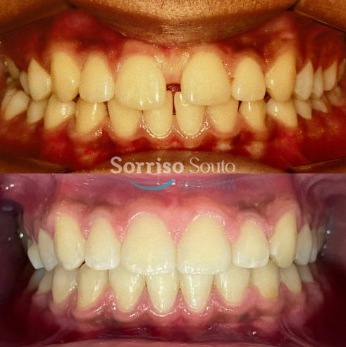
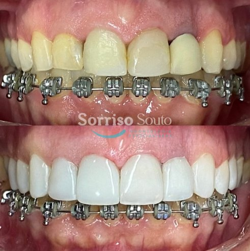
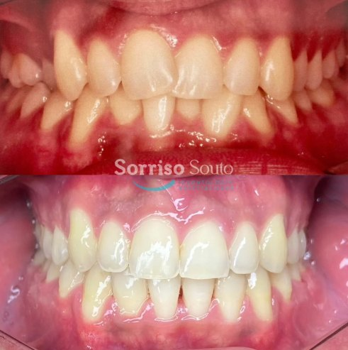
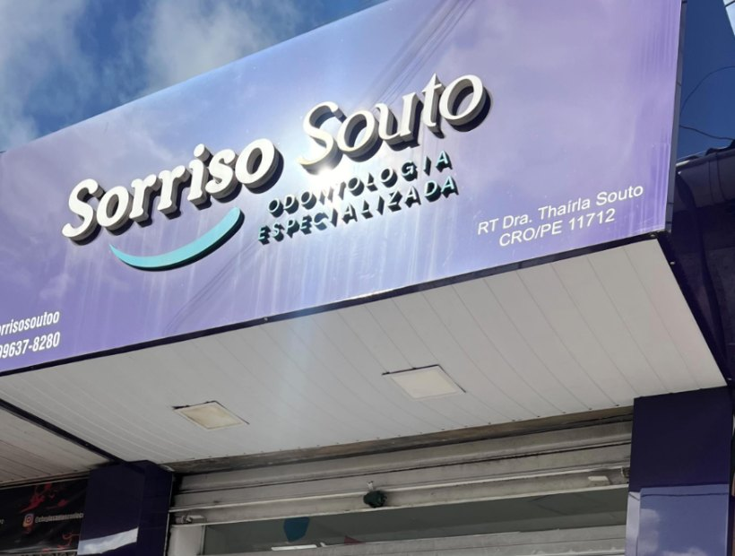

Retrato a receber
Dra. Thaírla Souto
CRO/PE 11712 · Responsável técnicaOrtodontia e ortopedia funcional, facetas e restaurações em resina.
Odontologia especializada
Ortodontia, prótese, estética e clínica geral em um só consultório, na Avenida Brasil. Tudo começa com uma avaliação: entendemos o seu caso antes de indicar qualquer tratamento.

Ortodontia para crianças, jovens e adultos — inclusive na fase de crescimento.
Prótese e reabilitação para quem precisa voltar a mastigar e sorrir com segurança.
Consultório de bairro na Av. Brasil, 2702, com atendimento também aos sábados.
Cada tratamento começa pela função — mastigar, falar e fechar a boca com conforto. A estética vem junto, como consequência de um sorriso que funciona.
Não sabe qual é o seu caso? Agende uma avaliação.Aparelho para alinhar e nivelar os dentes e corrigir a mordida. Nas crianças, as placas expansoras aproveitam a fase de crescimento para guiar o desenvolvimento dos ossos.
Prótese total, parcial removível, prótese adesiva e implante para repor dentes perdidos e devolver a mastigação.
Facetas e restaurações em resina para corrigir forma e cor, e clareamento dental.
Limpeza e remoção de tártaro, restaurações e orientação de higiene para adultos e crianças.
Tratamento de canal com anestesia local, extrações e frenectomia.
Cada caso tem uma dentista responsável, do diagnóstico ao acompanhamento.
Ortodontia e ortopedia funcional, facetas e restaurações em resina.
Prótese total e reabilitação oral, restaurações estéticas.
Conversa e exame clínico para entender a queixa, a mordida e a saúde da boca.
Explicamos as opções, as etapas e o tempo previsto. Quando necessário, pedimos documentação ortodôntica.
Consultas agendadas com a dentista responsável pelo seu caso.
Contenção, manutenção e revisões para o resultado durar.
No @sorrisosoutoo mostramos tratamentos concluídos — sempre com autorização do paciente — e dicas de cuidado para o dia a dia.

Mordida cruzada corrigida
Arcada alinhada com aparelho
Frenectomia e diastema fechado
Restauração estética durante o aparelho
Alinhamento e nivelamentoCada paciente é único: resultados variam de caso para caso. Imagens divulgadas com autorização dos pacientes.
Pelo WhatsApp (81) 99637-8280 ou pelo formulário desta página, que abre a conversa já com o seu pedido. A equipe confirma o horário com você.
Sim. Antes de qualquer tratamento, a dentista examina e explica as opções para o seu caso.
Sim. Na fase de crescimento, a ortopedia com placas expansoras ajuda a guiar o desenvolvimento dos ossos e da mordida. Também orientamos a higiene dos pequenos.
Depende da mordida e da idade de cada paciente. O tempo previsto é apresentado no plano de tratamento, depois da avaliação.
O procedimento é feito com anestesia local. Algum desconforto depois é possível e varia de pessoa para pessoa; a dentista orienta como aliviar.
Fazemos uma avaliação e, se necessário, pedimos nova documentação ortodôntica antes de seguir.
Avenida Brasil, 2702 — Rio Doce, Olinda. Segunda a sexta, 8h às 18h; sábado, 8h às 12h.
Preencha os campos e continue a conversa no WhatsApp. A equipe confirma o melhor horário com você.
